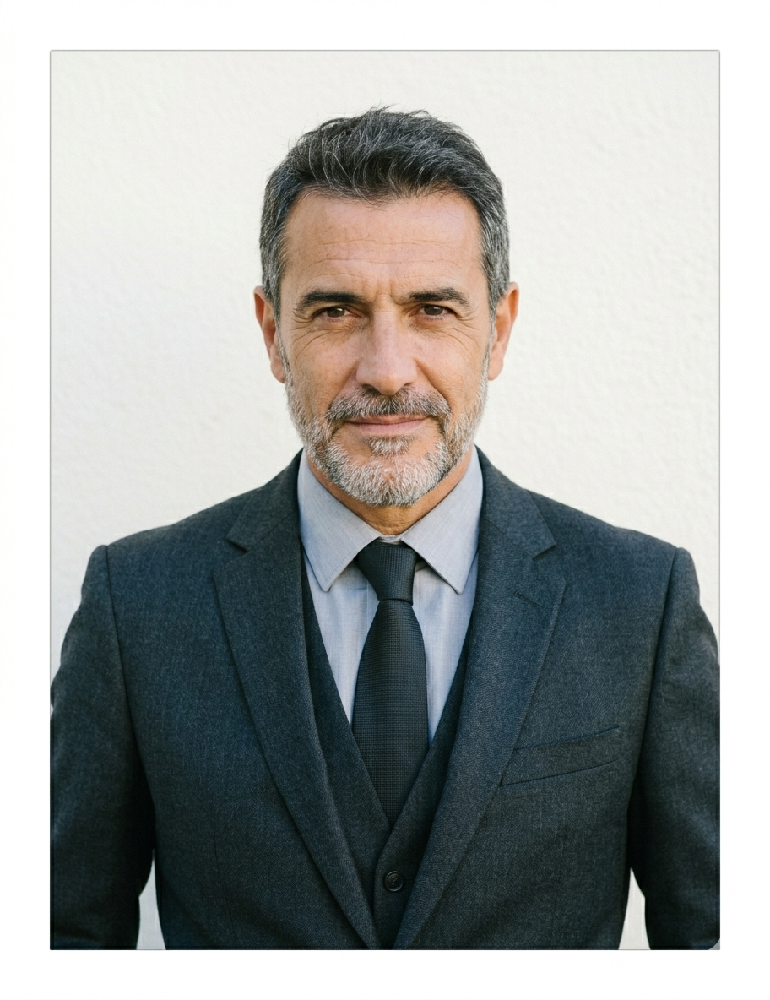
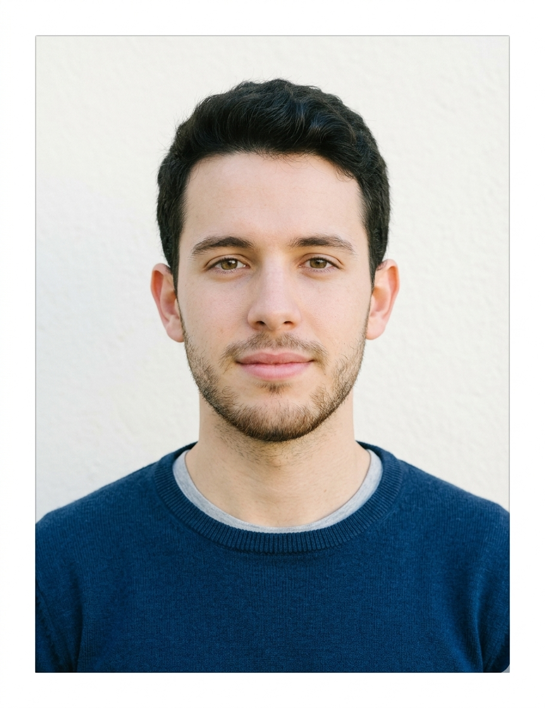

Alejandro Martínez
Director Ejecutivo
Cofundador y la mente estratégica detrás del proyecto de El Regional Madrileño. Compagina su experiencia en gestión de medios digitales con una fuerte vinculación al tejido deportivo de la Comunidad de Madrid. Su visión nació de una necesidad clara: profesionalizar la información del fútbol modesto y canteras mediante la tecnología y el diseño actual. Se encarga de coordinar las alianzas, el desarrollo tecnológico y la viabilidad del diario para garantizar que las historias de nuestros clubes de barrio lleguen cada día más lejos y con la mayor calidad posible."
Sofía Gómez
Redactora Jefa
Apasionada del periodismo deportivo de pie de campo y vecina de Madrid de toda la vida. Tras años recorriendo los campos de la comunidad, desde las categorías más modestas de la Preferente hasta los banquillos de la División de Honor de juveniles, asumió la dirección de contenidos de El Regional Madrileño con un objetivo claro: dar voz e importancia a los clubes, jugadores y aficiones que no abren los telediarios nacionales, pero que construyen la verdadera esencia del fútbol madrileño cada fin de semana. Para ella, cada partido de barrio esconde una gran historia que merece ser contada con el máximo rigor y respeto.

Carlos Ortiz
Fotógrafo y Reportero
Periodista madrileño apasionado por el deporte local. Fundador de El Regional Madrileño con el objetivo de dar voz a los clubes de barrio.Cámara en mano y pegado a la línea de banda en cada jornada. Especializado en capturar la épica, el barro y la emoción pura del fútbol base madrileño. Su objetivo no solo busca el gol, sino el abrazo del vestuario, la tensión del banquillo y la pasión de la grada en cada campo de barrio de la Comunidad de Madrid. Lleva años inmortalizando el crecimiento de nuestras canteras, logrando que el fútbol más auténtico tenga las imágenes profesionales que se merece.